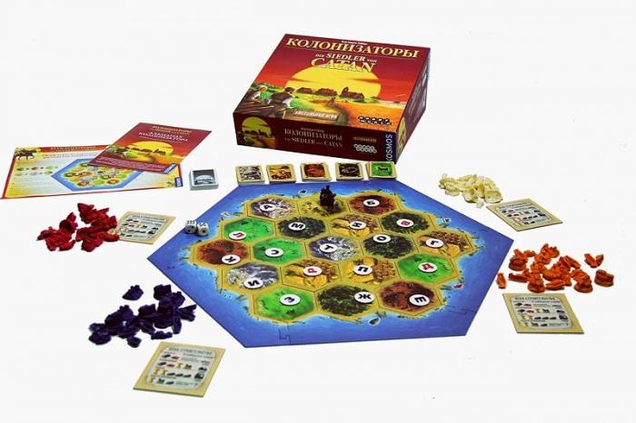

Каркассон (нем. Carcassonne) — настольная стратегически-экономическая игра немецкого стиля. Разработана Клаусом-Юргеном Вреде (англ.) (нем. Klaus-Jürgen Wrede) в 2000 году, впервые издана компанией Hans im Glück в Германии. В 2001 году была удостоена награды «Игра года» в Германии (нем. Spiel des Jahres). В настоящее время Каркассон выпускается многими мировыми издателями настольных игр, и, на 2018 год, в мире продано более 10 миллионов экземпляров игры (включая дополнения).
В 2014 году игра претерпела редизайн. Перезапуск игры состоялся в декабре 2014: тогда в продажу поступила англоязычная версия новой редакции «Каркассона». Игра осталась прежней, но обзавелась новым оформлением: над обложкой в этот раз поработал Крис Куилльямс (Chris Quilliams), а над квадратами земель — Анна Пецке (Anne Pätzke). Чтобы новая редакция игры осталась совместимой со всеми выпущенными ранее дополнениями, рубашку квадратов оставили прежней. К базовым компонентам в коробку доложили мини-дополнения River («Река») и The Abbot («Аббат»).
Игра заключается в пошаговом собирании игрового поля (тайлов) и размещении на нём фишек своих подданных (миплов). В зависимости от того, на какую местность поставлена фишка, она становится рыцарем, крестьянином, монахом или разбойником.
«Ужас Аркхэма» (англ. «Arkham Horror») — настольная игра по мотивам мифов Г. Ф. Лавкрафта и настольной ролевой системы «Зов Ктулху». Придумана Ричардом Лаунисом (англ. Richard Launius), первое издание было выпущено компанией «Chaosium» в 1987, второе (с другими правилами) компанией «Fantasy Flight Games» в 2005 и перевыпущено в 2007 году. В 2018 году было выпущено третье издание, созданное всё той же Fantasy Flight Games.
Во всех изданиях игры игроки примеряют на себя роль исследователей, которые в 1926 году расследуют странные и жуткие происшествия в городе Аркхем, штат Массачусетс. В городе открываются врата в другие миры, на его улицы выходят злобные монстры, и начинают твориться всяческие безобразия. Если открывается слишком много врат, то в Аркхем приходит один из Древних, и игроки, чтоб спасти мир и себя, должны сразиться с ним.
Цель игры не допустить пришествия в мирный Аркхем Древнего зла, закрыв все врата в городе, или, при неудаче, уничтожить Древнего.

Серия "Колонизаторы" – одна из самых известных, интересных и оригинальных семейных настольных игр в мире. Всемирную известность она получила ещё в далёком 1995 году, когда получила престижную премию Spiel des Jahres. С тех пор игра занимает своё место на домашних полках и в сердцах миллионов любителей настольных игр. Игра послужила прообразом известнейшей компьютерной игры Settlers и породила массу продолжений в настольном формате.
Живой классикой "Колонизаторы" стали за счёт оригинального, продуманного и дружелюбного игрового процесса, в котором игроки выступают в роли мирных поселенцев, осваивающих остров Катан. Игровой процесс уникален, но между тем достаточно прост и увлекателен, что делает из "Колонизаторов" замечательную семейную игру! В роли мирных поселенцев, заселяющих остров Катан, вам предстоит ощутить на себе настоящую жизнь колонизатора: добывать ресурсы, строить посёлки, города и дороги, защищаться от разбойников, торговаться с соседями.